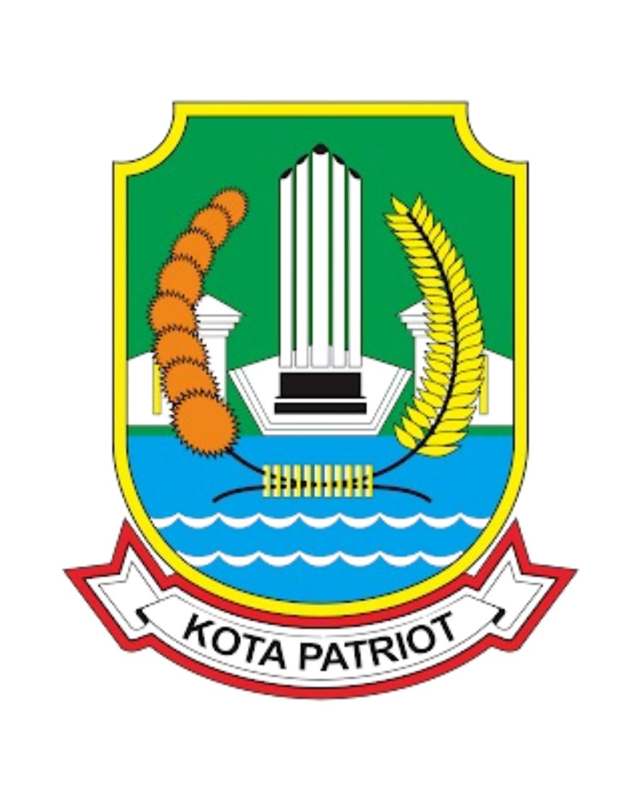
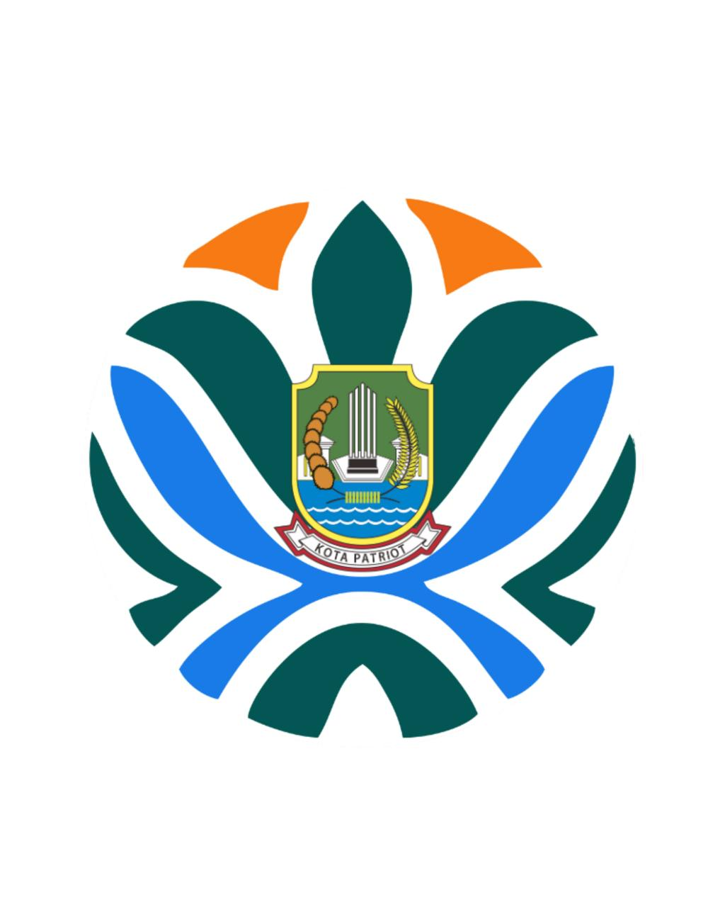
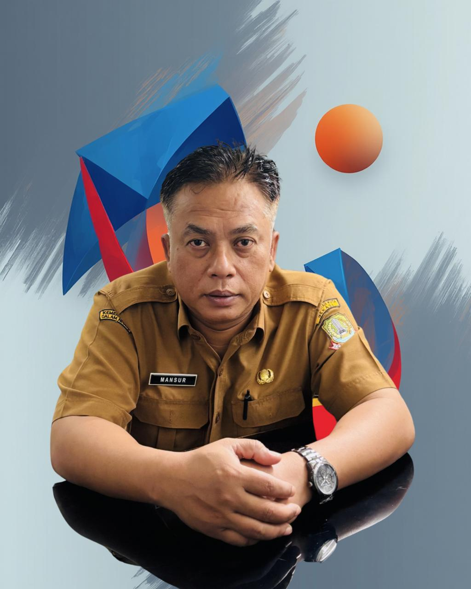

Pasukan Katak
Orange
Data pengelolaan sampah Kali Bekasi oleh Pasukan Katak Orange, Dinas Lingkungan Hidup Kota Bekasi. Visualisasi data real-time dari lapangan.


Hasil Kerja Nyata
Data terkumpul dari kegiatan pengelolaan sampah Kali Bekasi
Pimpinan Kami
Jajaran pimpinan yang memimpin dan mendukung misi Pasukan Katak Orange

Dra.Kiswatinigsih., M.Sc
Kepala Dinas Lingkungan Hidup
Pemerintah Kota Bekasi
Dyah Kusumo Winahyu., S.H., M.H.
Sekretaris Dinas Lingkungan Hidup
Pemerintah Kota Bekasi

Wulan Agustina Triwardani., S.E., MM
Kepala Bidang Pengendalian Pencemaran, Kerusakan Lingkungan Hidup Dan Penegak Hukum
Pemerintah Kota Bekasi

Mansur., S.Ip
Kepala Koordinator Lapangan Pasukan Katak Orange
Pemerintah Kota Bekasi
 📷 Foto dari @pasukankatak_dlh
📷 Foto dari @pasukankatak_dlh
Sejarah Pasukan Katak Orange
Pasukan Katak Orange terbentuk pada tahun 2018 di bawah naungan Dinas Lingkungan Hidup (DLH) Kota Bekasi. Tim ini dibentuk sebagai respons terhadap permasalahan sampah yang semakin menumpuk di Kali Bekasi.
Dengan semangat gotong royong dan kepedulian terhadap lingkungan, Pasukan Katak Orange secara rutin melakukan pembersihan dan pengumpulan sampah di sepanjang Kali Bekasi. Setiap kegiatan didokumentasikan dan datanya dicatat secara sistematis untuk pelaporan kepada pimpinan.
Nama "Katak" diambil sebagai simbol kedekatan dengan air dan sungai, sementara warna "Orange" melambangkan semangat dan energi dalam menjaga kebersihan lingkungan.
Perjalanan Kami
Jejak langkah Pasukan Katak Orange dalam menjaga Kali Bekasi
Cikal Bakal Tim Pembersih Sungai di Bawah Badan Lingkungan Hidup
Pada tahun 2015, sebelum memiliki identitas resmi, tim pembersih sungai masih berada di bawah naungan Badan Lingkungan Hidup Kota Bekasi melalui Bidang PDL (Pengendalian Dampak Lingkungan). Tim ini dibentuk sebagai respons terhadap meningkatnya penumpukan sampah di sepanjang Kali Bekasi dan sejumlah saluran air utama di Kota Bekasi. Jumlah anggota awal berkisar antara 20–30 orang dengan sistem kerja harian lapangan yang difokuskan pada pengangkatan sampah manual menggunakan alat sederhana dan perahu kecil operasional. Sistem pembayaran pada masa ini masih bersifat harian (cash), diberikan sesuai jumlah hari kerja aktif di lapangan. Skema ini diterapkan karena status tim masih berbasis tenaga harian lepas yang ditugaskan membantu operasional kebersihan sungai.
Penguatan Pola Kerja Lapangan dan Penambahan Armada Sederhana
Memasuki tahun 2016, pola kerja mulai lebih terstruktur meskipun masih berada di bawah koordinasi Bidang PDL. Penugasan dibagi berdasarkan zona pembersihan dan titik rawan sampah. Kegiatan rutin meliputi penyisiran sungai, pengangkatan sampah kiriman, serta pembersihan darat di bantaran. Jumlah anggota tetap berada di kisaran 20–30 personel aktif, dengan jadwal kerja yang lebih teratur mengikuti hari kerja efektif. Sistem pembayaran tetap menggunakan metode harian tunai (cash) sesuai kehadiran kerja. Pada fase ini mulai ada peningkatan dukungan peralatan seperti perahu tambahan dan alat pengait sampah untuk mempercepat proses evakuasi sampah dari badan sungai.
Konsolidasi Internal dan Munculnya Identitas Lapangan
Tahun 2017 menjadi masa konsolidasi dan penguatan identitas di lapangan. Walaupun secara administratif masih berada di bawah Badan Pengelolaan Lingkungan Hidup Kota Bekasi melalui Bidang PDL, Pada tahun ini juga Badan Pengelolaan Lingkungan Hidup Kota Bekasi bertransformasi menjadi Dinas Lingkungan Hidup Kota Bekasi tim ini mulai dikenal masyarakat sebagai “pasukan pembersih kali” karena intensitas kegiatan yang semakin tinggi dan konsisten. Koordinasi lapangan semakin tertata, dengan pembagian tugas antara tim air dan tim darat. Bantuan saat kondisi darurat seperti banjir juga mulai menjadi bagian dari tugas tambahan tim. Sistem pembayaran harian cash masih diterapkan sesuai hari kerja efektif, namun mulai muncul pembahasan internal mengenai kebutuhan pembentukan tim yang lebih permanen, memiliki nama resmi, identitas seragam, serta sistem manajemen yang lebih kuat. Fase ini menjadi fondasi penting menuju transformasi kelembagaan pada tahun berikutnya.
Transformasi Menjadi Pasukan Katak Orange
Berangkat dari pengalaman operasional 2015–2017, pada tahun 2018 tim ini resmi bertransformasi di bawah Dinas Lingkungan Hidup Kota Bekasi menjadi Pasukan Katak Orange dengan identitas, seragam, struktur koordinasi, serta sistem kerja yang lebih profesional. Transformasi ini menandai perubahan dari tenaga harian lapangan menjadi tim operasional kebersihan sungai yang terorganisir dan menjadi ujung tombak penanganan sampah di Kali Bekasi dan wilayah Kota Bekasi secara keseluruhan.
Penguatan Operasional dan Awal Koneksi Strategis
Memasuki tahun 2019, Pasukan Katak Orange mulai memperluas cakupan kerja dan memperkuat pola operasional lapangan. Pembersihan tidak hanya dilakukan di Kali Bekasi, tetapi juga di saluran sekunder dan titik-titik rawan banjir di berbagai kecamatan. Pada tahun ini pula terjalin koneksi dan komunikasi awal dengan Waste4Change sebagai mitra strategis dalam pengelolaan sampah berkelanjutan. Kolaborasi ini menjadi fondasi penting dalam peningkatan kapasitas manajemen sampah meskipun peresmian kerja sama belum dilakukan pada tahap ini.
Konsolidasi dan Adaptasi Sistem Kerja
Tahun 2020 menjadi periode konsolidasi internal dan adaptasi sistem kerja di tengah berbagai tantangan operasional. Pasukan Katak Orange memperkuat standar keselamatan kerja, memperbaiki sistem koordinasi lapangan, serta meningkatkan intensitas patroli sungai dan bantuan darat saat kondisi darurat seperti banjir. Edukasi kepada masyarakat mulai lebih digencarkan melalui pendekatan langsung di lokasi kegiatan kebersihan.
Peresmian Kerja Sama dan Awal Digitalisasi
Pada tahun 2021 menjadi tonggak penting dengan diresmikannya kerja sama antara Dinas Lingkungan Hidup Kota Bekasi dan Waste4Change. Kolaborasi ini memperkuat aspek pengelolaan dan pemilahan sampah secara lebih terstruktur. Di tahun yang sama, Pasukan Katak Orange mulai melakukan digitalisasi pendataan sampah, menggantikan pencatatan manual menjadi sistem berbasis data yang lebih terukur dan terdokumentasi. Digitalisasi ini mencakup pencatatan volume, jenis sampah, serta titik pengangkutan sebagai bagian dari upaya transparansi dan akuntabilitas kinerja.
Penguatan Data dan Edukasi Publik
Memasuki tahun 2022, sistem digitalisasi semakin disempurnakan dengan pengelolaan data yang lebih rapi dan terintegrasi. Pasukan Katak Orange mulai memanfaatkan media sosial sebagai sarana publikasi kegiatan harian, laporan pengangkutan sampah, serta kampanye edukasi lingkungan. Partisipasi dalam kegiatan kebersihan kota semakin intensif, menjadikan Pasukan Katak Orange sebagai ujung tombak Dinas Lingkungan Hidup dalam aksi cepat tanggap pembersihan sungai dan wilayah terdampak.
Integrasi Operasional Air dan Darat
Pada tahun 2023, integrasi antara tim operasional air dan bantuan darat semakin diperkuat. Tidak hanya fokus pada pembersihan Kali Bekasi, tim juga aktif dalam penanganan sampah pasca banjir, kegiatan gotong royong massal, serta dukungan kebersihan dalam berbagai agenda Pemerintah Kota Bekasi. Dokumentasi kegiatan semakin sistematis dan berbasis data, memperlihatkan tren pengangkutan dan efektivitas kerja tim.
Transparansi Data dan Penguatan Branding
Tahun 2024 menjadi fase penguatan identitas dan branding Pasukan Katak Orange. Data pengangkutan sampah mulai divisualisasikan dalam bentuk grafik dan laporan berkala. Media sosial dikelola lebih profesional untuk menyampaikan capaian kinerja, edukasi lingkungan, serta dokumentasi aksi lapangan. Transparansi data menjadi bagian dari komitmen terhadap pelayanan publik yang akuntabel dan terbuka.
Pengembangan Sistem Informasi dan Website Resmi
Pada tahun 2025, Pasukan Katak Orange mengembangkan sistem informasi berbasis web yang menampilkan data pengangkutan sampah, dokumentasi kegiatan, serta materi edukasi lingkungan. Website resmi ini menjadi pusat informasi publik yang dapat diakses masyarakat untuk melihat perkembangan kinerja secara berkala. Integrasi data digital dengan tampilan visual memperkuat akurasi laporan dan meningkatkan kepercayaan publik.
Optimalisasi Digital dan Penguatan Peran sebagai Ujung Tombak DLH
Memasuki tahun 2026, sistem website terus diperbarui dengan fitur pencarian data per tanggal dan per bulan, grafik otomatis, serta dokumentasi kegiatan yang terhubung dengan media sosial. Pasukan Katak Orange semakin mengukuhkan diri sebagai ujung tombak Dinas Lingkungan Hidup Kota Bekasi dalam penanganan kebersihan sungai, wilayah perkotaan, hingga bantuan darat saat kondisi darurat. Transformasi dari tim operasional lapangan menjadi unit kerja berbasis data dan digital menjadi bukti komitmen terhadap pengelolaan lingkungan yang modern, transparan, dan berkelanjutan di Kota Bekasi.
Rekap Kegiatan
Ringkasan aktivitas Pasukan Katak Orange secara berkala
Arsip Kegiatan Mingguan
Memuat arsip kegiatan...
Lihat Data Selengkapnya
Akses dashboard data sampah dengan visualisasi interaktif dan filter lengkap.